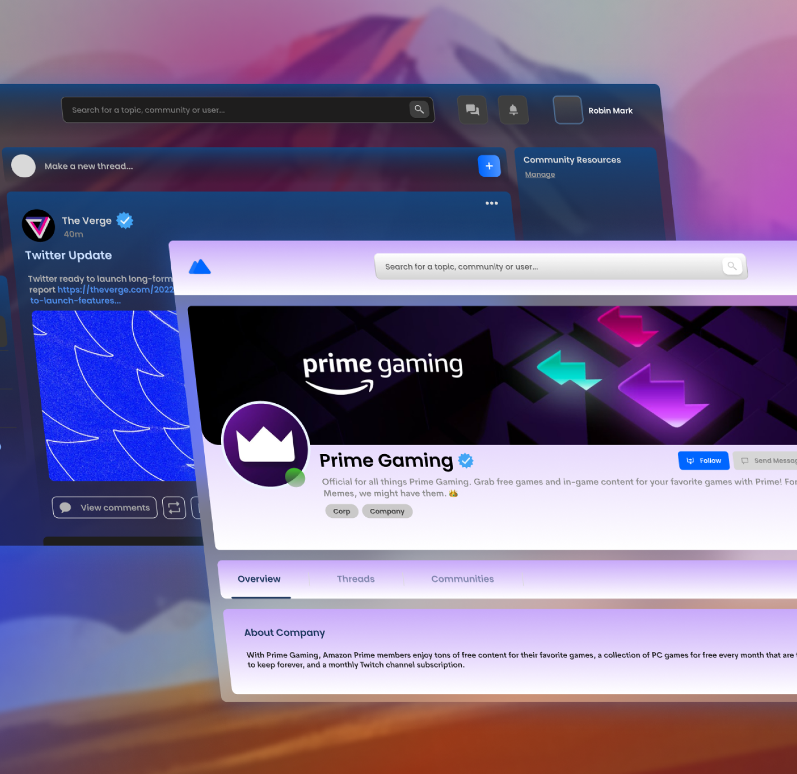
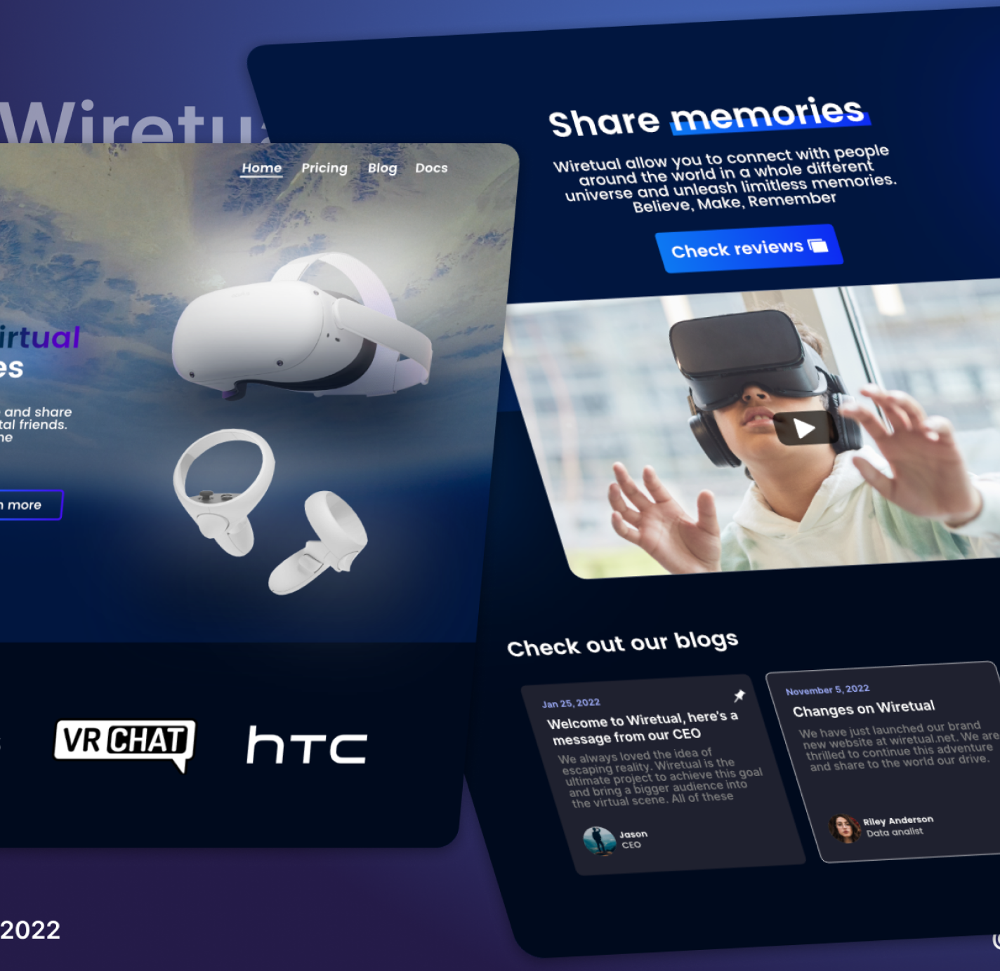
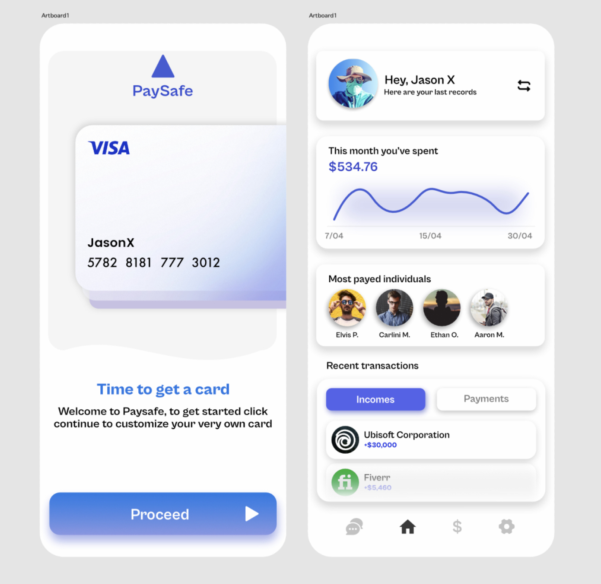
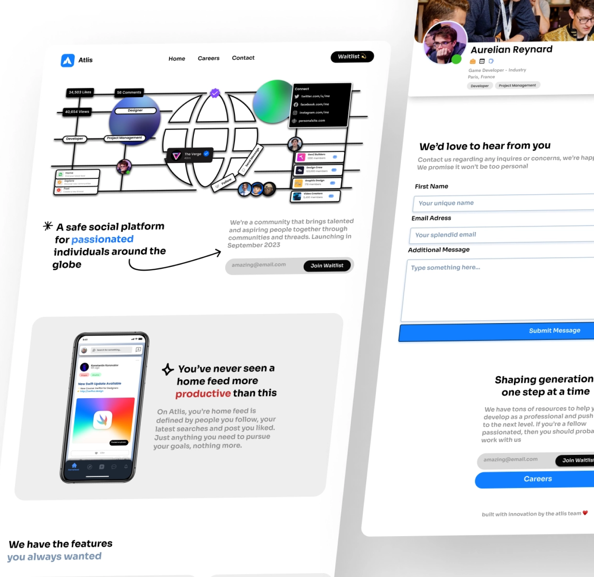
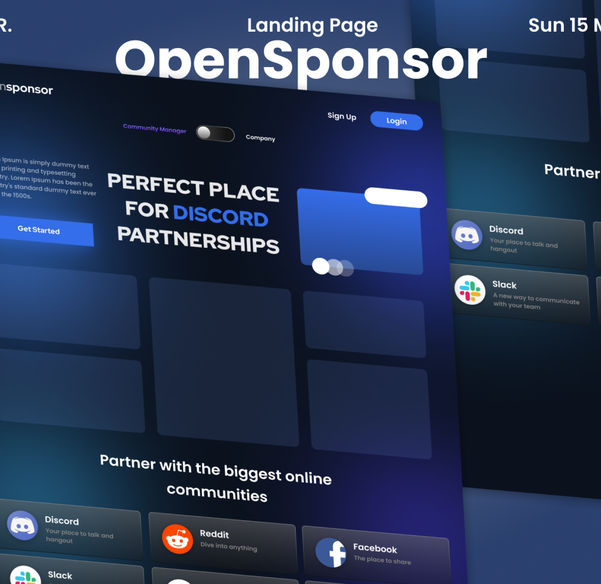
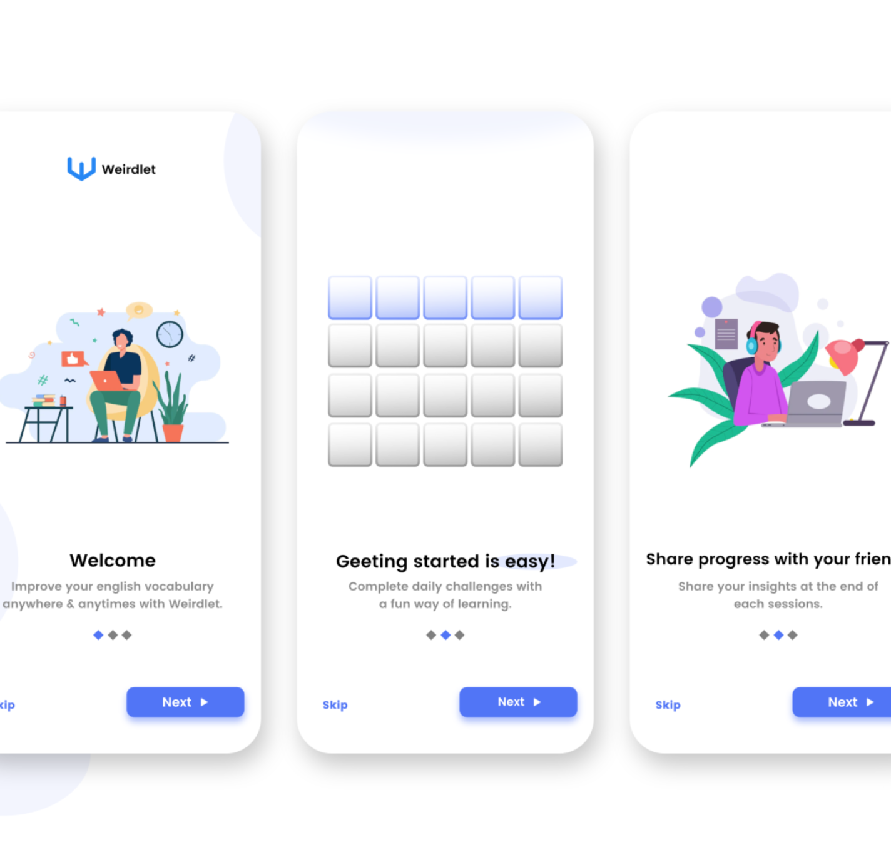

Jason here, UI and UX Designer since the age of 13. Crafting
evolving design artworks for the worldwideweb. I have a
huge passion in creative work and I’m dedicated to share
it through UI Design.
Atlis is an online platform
where individuals and
aspiring builders
driven by passion
share their work
Atlis is an online platform
where individuals and
aspiring builders
driven by passion
share their work

Atlis is an online platform
where individuals and
aspiring builders
driven by passion
share their work
On all the projects I worked, I always loved to leave a trace
of what I have done to reflect on my progression. As a result
I became a perfectionist and closely attentioned to details.
Below is a compilation of some designs I’ve made alone or in
collaboration
Atlis Development
Wiretual
Paysafe App
Atlis Landing Page
OpenSponsor
Weirdlet App
